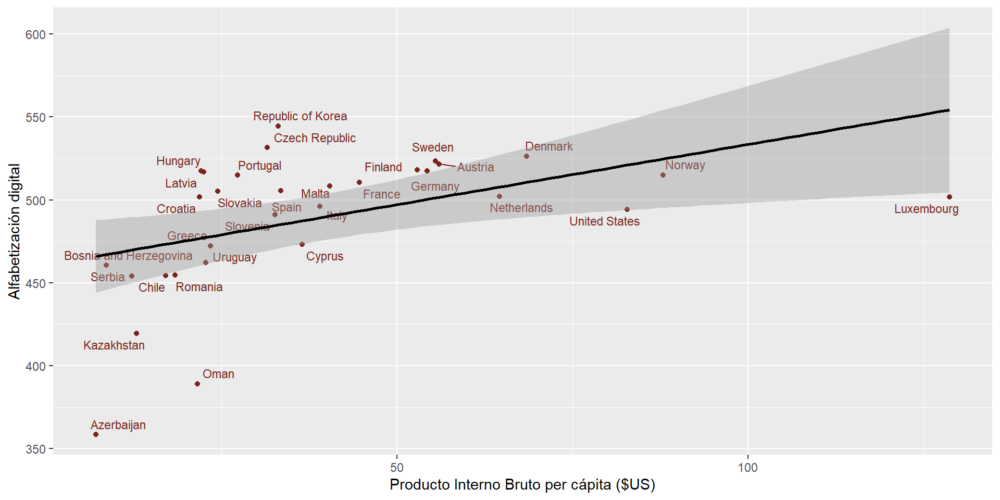
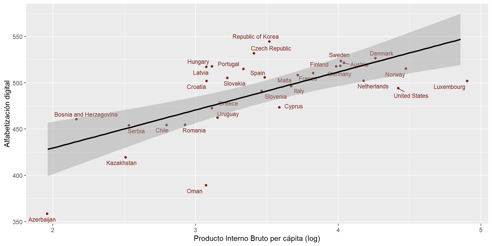
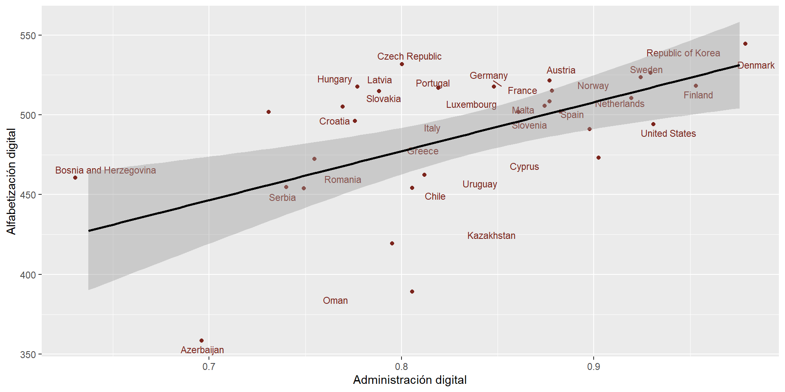
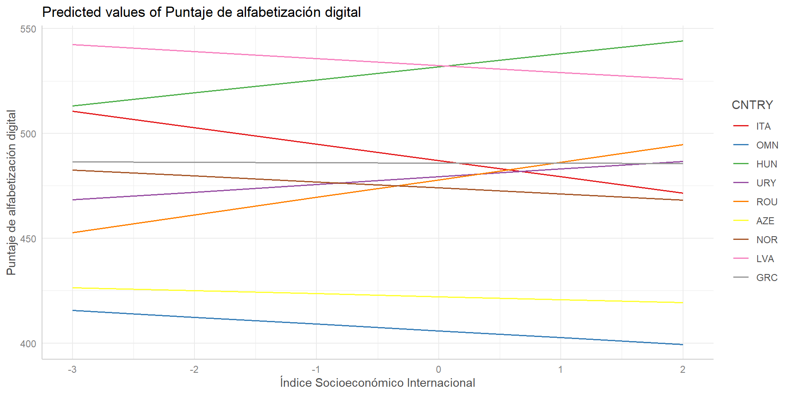
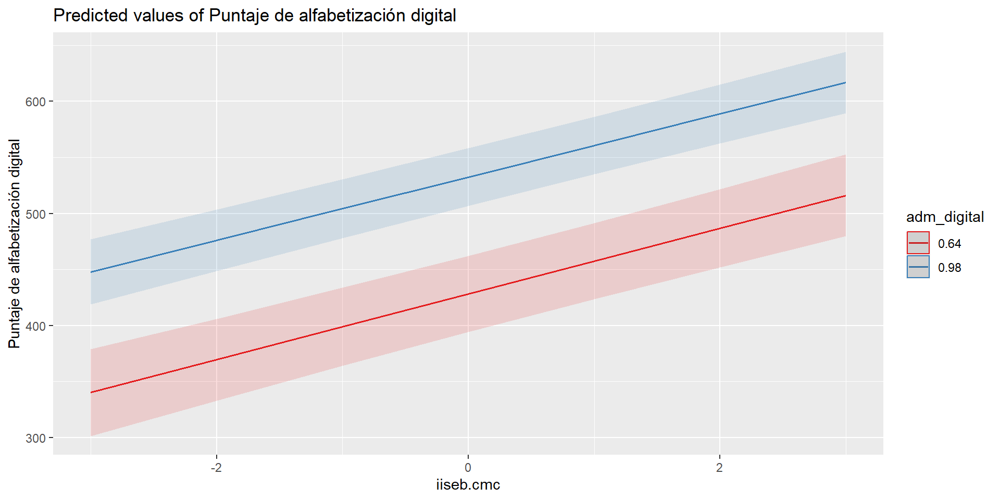
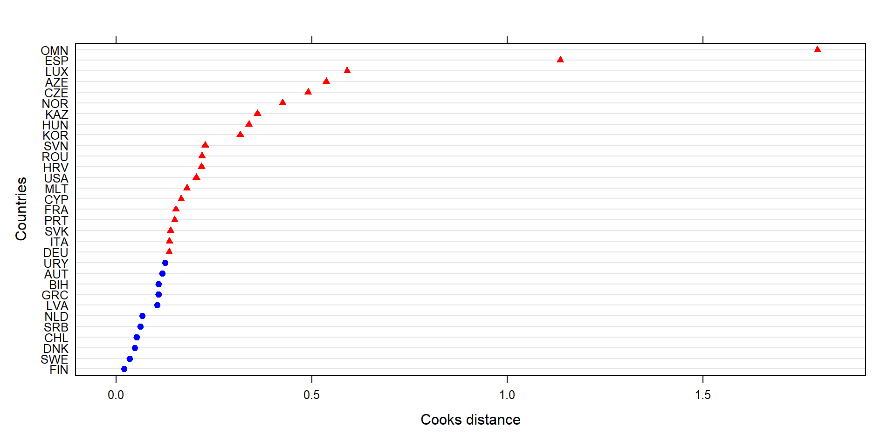

| var | label | n | NA.prc | mean | sd | range | |
|---|---|---|---|---|---|---|---|
| 1 | alf_digital | Puntaje de alfabetización digital | 104991 | 0 | 491.16 | 91.68 | 724.7 (45.41-770.12) |
| 2 | aprendizaje_escuela | Tareas relacionadas al aprendizaje online en la escuela | 104991 | 0 | 49.95 | 10.04 | 54.99 (20.76-75.75) |
| 3 | autoeffgen | Autoeficacia digital general del estudiante | 104991 | 0 | 50.07 | 9.93 | 51.5 (26.62-78.12) |
| 6 | sexo | Sexo de estudiante | 104991 | 0 | 0.50 | 0.50 | 1 (0-1) |
| 4 | expcompu | Experiencia con computador en años | 104991 | 0 | 2.50 | 1.27 | 4 (0-4) |
| 5 | iiseb | Índice Socioeconómico Internacional | 104991 | 0 | 0.06 | 0.99 | 4.46 (-2.54-1.91) |
La alfabetización digital en escolares del mundo actual
Un estudio mediante modelamiento multinivel
Tomás Urzúa Moreno
Curso electivo Análisis de datos multinivel. Facultad de Ciencias Sociales de la Universidad de Chile. 19 de junio de 2025
Introducción
Contexto
- La creciente relevancia de lo digital en la vida social (Buckingham, 2008)
- La figura del nativo digital y la presunción del conocimiento tecnológico (Eynon, 2010)
- Existen brechas digitales respecto al uso y conocimientos de las tecnologías de información y comunicación (TIC) (Claro, 2010)
Más contexto
- Las tecnologías digitales han irrumpido con fuerza en los procesos de enseñanza y aprendizaje de las escuelas (Sunkel et al., 2011)
- La promesa de la tecnología en la educación como catalizador para la reducción de desigualdades (Claro, 2010)
- Además de la disponibilidad de infraestructura tecnológica, es necesario considerar las habilidades que poseen las personas para desenvolverse con TIC
Relevancia
- La alfabetización digital como competencia fundamental
- Abarca habilidades técnicas, cognitivas y metacognitivas (Cuberos de Quintero et al., 2017; Walton, 2016)
- “An individual’s ability to use computers to investigate, create, and communicate in order to participate effectively at home, at school, in the workplace, and in society” (Fraillon et al., 2013)
Factores asociados
- Parte de la literatura indica que actualmente las mujeres tienden a tener mejores resultados académicos que sus pares (Fairlie, 2016; The Centre of Social Justice, 2025)
- Asimismo, el nivel socioeconómico históricamente ha sido considerado como predictor para el logro de resultados en estudiantes (Cervini, 2002; Chaparro Caso López et al., 2016)
¿De qué manera se relacionan los factores individuales y contextuales a nivel país en el logro de alfabetización digital de los estudiantes?
Hipótesis
Nivel 1:
\(H_1\): Ser mujer tendrá un efecto positivo sobre la alfabetización digital
\(H_2\): A mayor índice socioeconómico, mayor será la alfabetización digital
Nivel 2:
\(H_3\): A mayor PIB per cápita del país, mayor será su promedio de alfabetización digital
\(H_4\): A mayor Índice de Administración Digital, mayor será el promedio de alfabetización digital del país
Datos
- Elabora un cuestionario de caracterización y una prueba práctica estandarizada
- Su primer ciclo fue llevado a cabo en 2013
- Su último ciclo (2023) contiene 135.615 estudiantes anidados en 35 países
Variables
Descriptivos
| var | label | n | NA.prc | mean | sd | range |
|---|---|---|---|---|---|---|
| adm_digital | Administración digital | 31 | 0 | 0.84 | 0.08 | 0.34 (0.64-0.98) |
| logpib | Logaritmo de PIB | 31 | 0 | 3.45 | 0.67 | 2.89 (1.96-4.86) |
| pib | Producto Interno Bruto per cápita | 31 | 0 | 38.88 | 26.65 | 121.55 (7.13-128.68) |
Métodos
\[\small alfdigital_{ij} = \gamma_{10} \text{sexo.cmc}_i + \gamma_{20} \text{iiseb.cmc}_i + \gamma_{30} \text{expcompu.cmc}_i + \gamma_{40} \text{autoeffgen.cmc}_i + \gamma_{50} \text{aprendizaje_escuela.cmc}_i + \gamma_{01} \text{adm_digital}_j + \gamma_{02} \text{logpib}_j + \mu_{0j}\]
Resultados

Figure 1: Correlación entre alfabetización digital y PIB (r = 0.46)

Figure 2: Correlación alfabetización digital y PIB(log) (r = 0.66)

Figure 3: Correlación alfabetización digital y administración digital (r = 0.56)
Modelos
| Modelo nulo | Variables nivel 1 | Adm. digital | Variables nivel 2 | Modelo completo | |
|---|---|---|---|---|---|
| Predictors | Estimates | Estimates | Estimates | Estimates | Estimates |
| (Intercept) | 489.12 *** (7.52) |
489.12 *** (7.52) |
231.76 ** (71.29) |
310.77 *** (72.37) |
310.78 *** (72.36) |
| sexo.cmc | 15.18 *** (0.46) |
15.18 *** (0.46) |
|||
| iiseb.cmc | 26.06 *** (0.24) |
26.06 *** (0.24) |
|||
| expcompu.cmc | 10.14 *** (0.19) |
10.14 *** (0.19) |
|||
| autoeffgen.cmc | 0.33 *** (0.03) |
0.33 *** (0.03) |
|||
| aprendizaje_escuela.cmc | 0.06 * (0.02) |
0.06 * (0.02) |
|||
| adm_digital | 306.91 *** (84.68) |
68.20 (121.71) |
68.18 (121.71) |
||
| logpib | 35.12 * (13.79) |
35.12 * (13.79) |
|||
| Random Effects | |||||
| σ2 | 6592.96 | 5654.32 | 6592.96 | 6592.96 | 5654.32 |
| τ00 | 1752.50 CNTRY | 1752.77 CNTRY | 1247.12 CNTRY | 1048.34 CNTRY | 1048.60 CNTRY |
| ICC | 0.21 | 0.24 | 0.16 | 0.14 | 0.16 |
| N | 31 CNTRY | 31 CNTRY | 31 CNTRY | 31 CNTRY | 31 CNTRY |
| Observations | 104991 | 104991 | 104991 | 104991 | 104991 |
| Marginal R2 / Conditional R2 | 0.000 / 0.210 | 0.112 / 0.322 | 0.050 / 0.201 | 0.073 / 0.201 | 0.187 / 0.314 |
| * p<0.05 ** p<0.01 *** p<0.001 | |||||
Pendiente aleatoria
Data: icils_c
Models:
reg_1: alf_digital ~ 1 + iiseb.cmc + logpib + (1 | CNTRY)
reg_random: alf_digital ~ 1 + iiseb.cmc + logpib + (1 + iiseb | CNTRY)
npar AIC BIC logLik deviance Chisq Df
reg_1 5 1209312 1209360 -604651 1209302
reg_random 7 1209026 1209093 -604506 1209012 289.84 2
Pr(>Chisq)
reg_1
reg_random < 0.00000000000000022 ***
---
Signif. codes: 0 '***' 0.001 '**' 0.01 '*' 0.05 '.' 0.1 ' ' 1Pendiente aleatoria

Figure 4: Aleatorización de la pendiente índice socioeconómico
Interacción entre niveles

Figure 5: Interacción entre índice socioeconómico y alfabetización digital
Casos influyentes

Figure 6: Distancia de Cook
Significancia
$Intercept
Altered.Teststat Altered.Sig Changed.Sig
AUT 4.231736 FALSE FALSE
AZE 5.156549 FALSE FALSE
BIH 3.272174 FALSE FALSE
CHL 4.200612 FALSE FALSE
CYP 4.190173 FALSE FALSE
CZE 4.204810 FALSE FALSE
DEU 4.194473 FALSE FALSE
DNK 4.005130 FALSE FALSE
ESP 4.240134 FALSE FALSE
FIN 4.104059 FALSE FALSE
FRA 4.225750 FALSE FALSE
GRC 4.213237 FALSE FALSE
HRV 4.067122 FALSE FALSE
HUN 4.068454 FALSE FALSE
ITA 4.190694 FALSE FALSE
KAZ 4.090071 FALSE FALSE
KOR 4.707412 FALSE FALSE
LUX 4.635771 FALSE FALSE
LVA 4.098486 FALSE FALSE
MLT 4.222530 FALSE FALSE
NLD 4.116181 FALSE FALSE
NOR 4.218838 FALSE FALSE
OMN 5.269889 FALSE FALSE
PRT 4.258271 FALSE FALSE
ROU 4.212489 FALSE FALSE
SRB 4.144984 FALSE FALSE
SVK 4.074435 FALSE FALSE
SVN 4.214745 FALSE FALSE
SWE 4.173519 FALSE FALSE
URY 4.178537 FALSE FALSE
USA 4.143111 FALSE FALSE
$sexo.cmc
Altered.Teststat Altered.Sig Changed.Sig
AUT 32.21384 FALSE FALSE
AZE 32.58105 FALSE FALSE
BIH 32.80203 FALSE FALSE
CHL 32.70053 FALSE FALSE
CYP 31.94346 FALSE FALSE
CZE 32.70193 FALSE FALSE
DEU 32.62394 FALSE FALSE
DNK 31.71471 FALSE FALSE
ESP 31.09928 FALSE FALSE
FIN 32.02916 FALSE FALSE
FRA 32.48079 FALSE FALSE
GRC 32.45532 FALSE FALSE
HRV 31.54017 FALSE FALSE
HUN 32.52033 FALSE FALSE
ITA 32.04837 FALSE FALSE
KAZ 32.85256 FALSE FALSE
KOR 31.21206 FALSE FALSE
LUX 32.15443 FALSE FALSE
LVA 31.93554 FALSE FALSE
MLT 31.78534 FALSE FALSE
NLD 32.44537 FALSE FALSE
NOR 31.76511 FALSE FALSE
OMN 28.75933 FALSE FALSE
PRT 32.56574 FALSE FALSE
ROU 32.52841 FALSE FALSE
SRB 32.84144 FALSE FALSE
SVK 32.53179 FALSE FALSE
SVN 31.56977 FALSE FALSE
SWE 32.56371 FALSE FALSE
URY 32.65665 FALSE FALSE
USA 32.45119 FALSE FALSE
$iiseb.cmc
Altered.Teststat Altered.Sig Changed.Sig
AUT 104.9540 FALSE FALSE
AZE 106.7514 FALSE FALSE
BIH 106.5456 FALSE FALSE
CHL 106.3455 FALSE FALSE
CYP 105.7886 FALSE FALSE
CZE 102.1889 FALSE FALSE
DEU 104.2332 FALSE FALSE
DNK 105.5346 FALSE FALSE
ESP 102.2034 FALSE FALSE
FIN 105.4622 FALSE FALSE
FRA 105.0010 FALSE FALSE
GRC 105.7203 FALSE FALSE
HRV 107.0622 FALSE FALSE
HUN 103.8258 FALSE FALSE
ITA 105.9331 FALSE FALSE
KAZ 106.6578 FALSE FALSE
KOR 106.8652 FALSE FALSE
LUX 103.2282 FALSE FALSE
LVA 106.0815 FALSE FALSE
MLT 106.2724 FALSE FALSE
NLD 106.3195 FALSE FALSE
NOR 105.7844 FALSE FALSE
OMN 106.7248 FALSE FALSE
PRT 105.2616 FALSE FALSE
ROU 104.9310 FALSE FALSE
SRB 105.6749 FALSE FALSE
SVK 104.6154 FALSE FALSE
SVN 105.6455 FALSE FALSE
SWE 105.5386 FALSE FALSE
URY 105.5316 FALSE FALSE
USA 105.9473 FALSE FALSE
$expcompu.cmc
Altered.Teststat Altered.Sig Changed.Sig
AUT 52.04034 FALSE FALSE
AZE 51.07102 FALSE FALSE
BIH 52.33819 FALSE FALSE
CHL 51.64842 FALSE FALSE
CYP 51.97414 FALSE FALSE
CZE 51.06682 FALSE FALSE
DEU 52.34364 FALSE FALSE
DNK 52.10236 FALSE FALSE
ESP 50.46823 FALSE FALSE
FIN 51.50577 FALSE FALSE
FRA 52.67793 FALSE FALSE
GRC 51.61012 FALSE FALSE
HRV 52.07889 FALSE FALSE
HUN 52.15815 FALSE FALSE
ITA 51.51615 FALSE FALSE
KAZ 50.27422 FALSE FALSE
KOR 51.72030 FALSE FALSE
LUX 51.75541 FALSE FALSE
LVA 52.07288 FALSE FALSE
MLT 52.10464 FALSE FALSE
NLD 52.68012 FALSE FALSE
NOR 52.15685 FALSE FALSE
OMN 50.93032 FALSE FALSE
PRT 51.44716 FALSE FALSE
ROU 51.46438 FALSE FALSE
SRB 51.82593 FALSE FALSE
SVK 51.64439 FALSE FALSE
SVN 52.81885 FALSE FALSE
SWE 52.06758 FALSE FALSE
URY 51.54758 FALSE FALSE
USA 52.05041 FALSE FALSE
$autoeffgen.cmc
Altered.Teststat Altered.Sig Changed.Sig
AUT 13.45862 FALSE FALSE
AZE 12.52682 FALSE FALSE
BIH 12.59225 FALSE FALSE
CHL 13.03329 FALSE FALSE
CYP 12.57824 FALSE FALSE
CZE 11.59669 FALSE FALSE
DEU 12.69788 FALSE FALSE
DNK 12.23553 FALSE FALSE
ESP 11.71404 FALSE FALSE
FIN 12.40318 FALSE FALSE
FRA 12.58198 FALSE FALSE
GRC 12.51452 FALSE FALSE
HRV 12.42157 FALSE FALSE
HUN 11.85908 FALSE FALSE
ITA 12.70858 FALSE FALSE
KAZ 12.24225 FALSE FALSE
KOR 13.03313 FALSE FALSE
LUX 13.90321 FALSE FALSE
LVA 12.44424 FALSE FALSE
MLT 13.19039 FALSE FALSE
NLD 12.46198 FALSE FALSE
NOR 10.84918 FALSE FALSE
OMN 13.27568 FALSE FALSE
PRT 12.77434 FALSE FALSE
ROU 12.90495 FALSE FALSE
SRB 12.50128 FALSE FALSE
SVK 12.33607 FALSE FALSE
SVN 13.06794 FALSE FALSE
SWE 12.78345 FALSE FALSE
URY 13.30772 FALSE FALSE
USA 12.89930 FALSE FALSE
$aprendizaje_escuela.cmc
Altered.Teststat Altered.Sig Changed.Sig
AUT 2.506765 FALSE FALSE
AZE 3.743300 FALSE FALSE
BIH 2.989944 FALSE FALSE
CHL 2.278258 FALSE FALSE
CYP 1.634462 FALSE FALSE
CZE 2.374717 FALSE FALSE
DEU 2.526117 FALSE FALSE
DNK 2.519966 FALSE FALSE
ESP 1.635512 FALSE FALSE
FIN 2.229478 FALSE FALSE
FRA 2.237946 FALSE FALSE
GRC 1.513570 FALSE FALSE
HRV 1.875199 FALSE FALSE
HUN 3.087220 FALSE FALSE
ITA 2.035091 FALSE FALSE
KAZ 2.112480 FALSE FALSE
KOR 2.909334 FALSE FALSE
LUX 1.654721 FALSE FALSE
LVA 1.662864 FALSE FALSE
MLT 1.347775 FALSE FALSE
NLD 2.201094 FALSE FALSE
NOR 2.509054 FALSE FALSE
OMN 3.218884 FALSE FALSE
PRT 2.808802 FALSE FALSE
ROU 2.600924 FALSE FALSE
SRB 2.127434 FALSE FALSE
SVK 2.752817 FALSE FALSE
SVN 2.839743 FALSE FALSE
SWE 2.046015 FALSE FALSE
URY 2.254288 FALSE FALSE
USA 1.613693 FALSE FALSE
$logpib
Altered.Teststat Altered.Sig Changed.Sig
AUT 2.468094 FALSE FALSE
AZE 1.959429 FALSE FALSE
BIH 2.514240 FALSE FALSE
CHL 2.352258 FALSE FALSE
CYP 2.497100 FALSE FALSE
CZE 2.479241 FALSE FALSE
DEU 2.404941 FALSE FALSE
DNK 2.496394 FALSE FALSE
ESP 2.530083 FALSE FALSE
FIN 2.501641 FALSE FALSE
FRA 2.488542 FALSE FALSE
GRC 2.498984 FALSE FALSE
HRV 2.511969 FALSE FALSE
HUN 2.544053 FALSE FALSE
ITA 2.474911 FALSE FALSE
KAZ 1.881494 FALSE FALSE
KOR 3.019309 FALSE FALSE
LUX 2.966001 FALSE FALSE
LVA 2.551844 FALSE FALSE
MLT 2.483347 FALSE FALSE
NLD 2.547490 FALSE FALSE
NOR 2.552531 FALSE FALSE
OMN 2.945681 FALSE FALSE
PRT 2.569082 FALSE FALSE
ROU 2.505260 FALSE FALSE
SRB 2.495222 FALSE FALSE
SVK 2.481573 FALSE FALSE
SVN 2.499870 FALSE FALSE
SWE 2.512706 FALSE FALSE
URY 2.386996 FALSE FALSE
USA 2.708217 FALSE FALSE
$adm_digital
Altered.Teststat Altered.Sig Changed.Sig
AUT 0.5480615 FALSE FALSE
AZE 0.6284200 FALSE FALSE
BIH 0.9226896 FALSE FALSE
CHL 0.6075296 FALSE FALSE
CYP 0.6139487 FALSE FALSE
CZE 0.7050704 FALSE FALSE
DEU 0.5803974 FALSE FALSE
DNK 0.5240801 FALSE FALSE
ESP 0.4966655 FALSE FALSE
FIN 0.5081050 FALSE FALSE
FRA 0.5482758 FALSE FALSE
GRC 0.5449600 FALSE FALSE
HRV 0.6714991 FALSE FALSE
HUN 0.7540804 FALSE FALSE
ITA 0.5478380 FALSE FALSE
KAZ 0.9381372 FALSE FALSE
KOR -0.1846703 FALSE FALSE
LUX -0.3626253 FALSE FALSE
LVA 0.7250524 FALSE FALSE
MLT 0.5569500 FALSE FALSE
NLD 0.5989765 FALSE FALSE
NOR 0.5088494 FALSE FALSE
OMN 0.2820325 FALSE FALSE
PRT 0.5626880 FALSE FALSE
ROU 0.5082978 FALSE FALSE
SRB 0.5545089 FALSE FALSE
SVK 0.6752749 FALSE FALSE
SVN 0.5498011 FALSE FALSE
SWE 0.4946607 FALSE FALSE
URY 0.6237019 FALSE FALSE
USA 0.5943784 FALSE FALSEPendientes
- Estimar DF Betas
- Estimar test de devianza y/o \(r^2\) para todos los modelos según corresponda
- Probar el nivel de escuela como variable de control
- Buscar indicadores socioeconómicos relacionados a inversión educacional
Conclusiones
- La mayoría de las hipótesis se corroboran excepto \(H_4\)
- Las diferencias en alfabetización digital pueden ser explicadas por diferencias entre países y no solo entre individuos
- Más allá de la inversión de un país en infraestructura digital, la riqueza del país es lo que determina la alfabetización digital de los jóvenes
Repositorio: https://github.com/multinivel-facso/trabajo1-grupo-1
Referencias

Buckingham, D. (2008). Mas allá de la tecnología: aprendizaje infantil en la era de la cultura digital (1. ed). Manantial.
Cervini, R. (2002). Desigualdades en el logro académico y reproducción cultural en Argentina. Un modelo de tres niveles. Revista Mexicana de Investigación Educativa, 7(16), 445–500.
Chaparro Caso López, A. A., González Barbera, C., & Caso Niebla, J. (2016). Familia y rendimiento académico: configuración de perfiles estudiantiles en secundaria. Revista electrónica de investigación educativa, 18(1), 53–68.
Claro, M. (2010). Impacto de las TIC en los aprendizajes de los estudiantes: estado del arte. CEPAL.
Cuberos de Quintero, M. A., Vivas García, M., Gelvez Almeida, E., & Peñaloza Carrillo, A. (2017). Didáctica y gerencia en el uso educativo de Tecnologías de Información y Comunicación (TIC) en educación básica secundaria. Ediciones Universidad Simón Bolívar.
Eynon, R. (2010). Supporting the “Digital Natives”: What is the role of schools? Networked Learning.
Fairlie, R. W. (2016). Do Boys and Girls Use Computers Differently, and Does It Contribute to Why Boys do Worse in School Than Girls? The B.E. Journal of Economic Analysis & Policy, 16(1), 59–96. https://doi.org/10.1515/bejeap-2015-0094
Fraillon, J., Schulz, W., Friedman, T., Ainley, J., & Gebhardt, E. (2013). ICILS 2013: Technical report. IEA Secretariat.
Sunkel, G., Trucco, D., & Möller, S. (2011). Aprender y enseñar con las tecnologías de la información y las comunicaciones en América Latina: Potenciales beneficios. CEPAL.
The Centre of Social Justice. (2025). Lost Boys. Centre of Social Justice.
Walton, G. (2016). “Digital Literacy” (DL): Establishing the Boundaries and Identifying the Partners. New Review of Academic Librarianship, 22(1), 1–4. https://doi.org/10.1080/13614533.2015.1137466